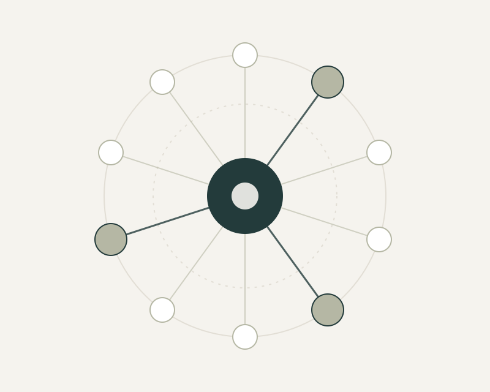

Executive operating partnership
20+services and technology products
- The challenge
- Align marketing and communications resources with departmental priorities across more than 20 public services and technology products, balancing organizational objectives, operational capacity and competing program needs.
- My ownership
- Served as a senior strategic and operating partner to department leadership, with authority over marketing priorities, staffing and resource allocation across a multidisciplinary portfolio.
- Strategic approach
- Established planning and prioritization processes that connected departmental objectives with audience needs, team capacity, agency resources and available funding.
Explore examples: Executive operating partnership
Executive partnership and organizational priorities
Partnered with the department Director and senior leadership to translate organizational priorities into marketing and communications plans, coordinate cross-functional initiatives and determine where resources would have the greatest impact.
Portfolio and resource-allocation authority
Had final decision-making authority over which products and programs received marketing support, the level and type of support provided, and the resources assigned to competing priorities.
Budget and operating responsibility
Held multimillion-dollar budget responsibility, overseeing resource planning and aligning internal staff, external agency support and program needs with available funding.
Operational governance
Established planning, prioritization and accountability practices to support consistent execution across an evolving portfolio of public services, campaigns and digital products.